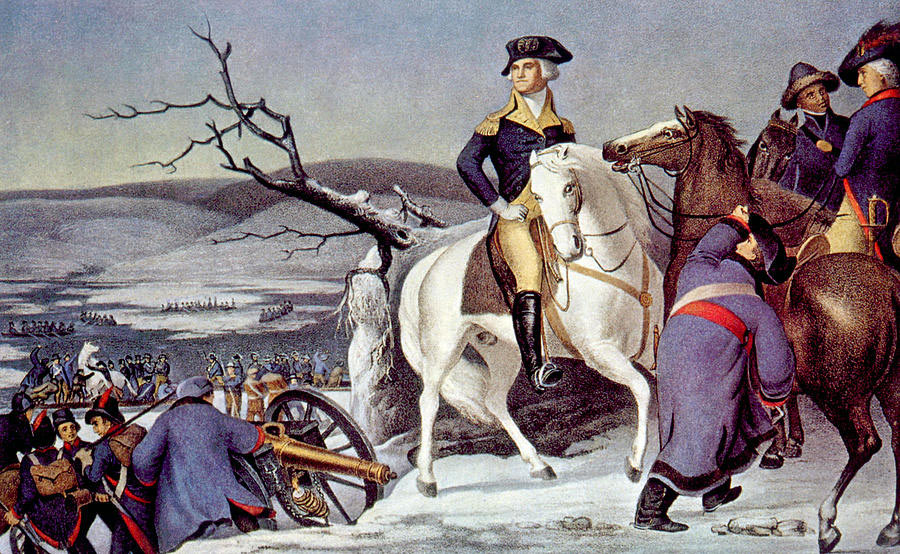

 After a string of defeats in New York George Washington made a tactical retreat through New Jersey and across the Deleware River into Pennsylvania. Facing vast desertion, shortages in supplies and expiring enlistments a need for victory was never greater. Leading his men across the Deleware River on December 26, 1776 during a harsh winter storm his troops were able to take position to attack Trenton just after 8:00am. Caught completley by suprise the Hessian Garrision put up a very breif fight before surrendering to Washington and his men.
“First Battle of Trenton,” George Washington’s Mount Vernon: Revolutionary War Battles, accessed May 4, 2021, https://www.mountvernon.org/george-washington/the-revolutionary-war/washingtons-revolutionary-war-battles/#callout-4.